Tutorial: Does the service meet expectations?
Acquisition
1 Tutorial briefing
⏱ 10 min
Open the teaching dataset and check the output style expected in this module
Investigation
2 Variable audit
⏱ 35 min
Classify six variables by measurement scale, and explain why the choice matters
Production
3 Tables and summaries
⏱ 40 min
Build frequency tables, descriptive statistics and two plots from the teaching dataset
Production
4 Manager summary
⏱ 25 min
Write a short paragraph that turns the output into clear management language
Assessment
5 Share and upload
⏱ 10 min
Compare paragraphs with a classmate, improve yours, and upload it with one cleaned output table
Today we answer the manager’s question with your own figures: does the service meet expectations?
DMM_Teaching_Data_Full.csv (download it)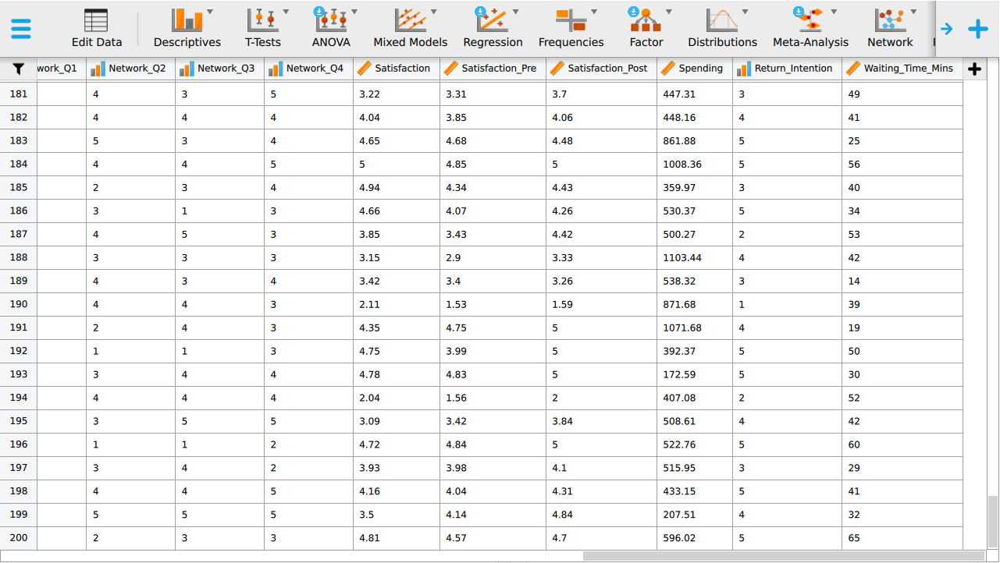
Respondent_ID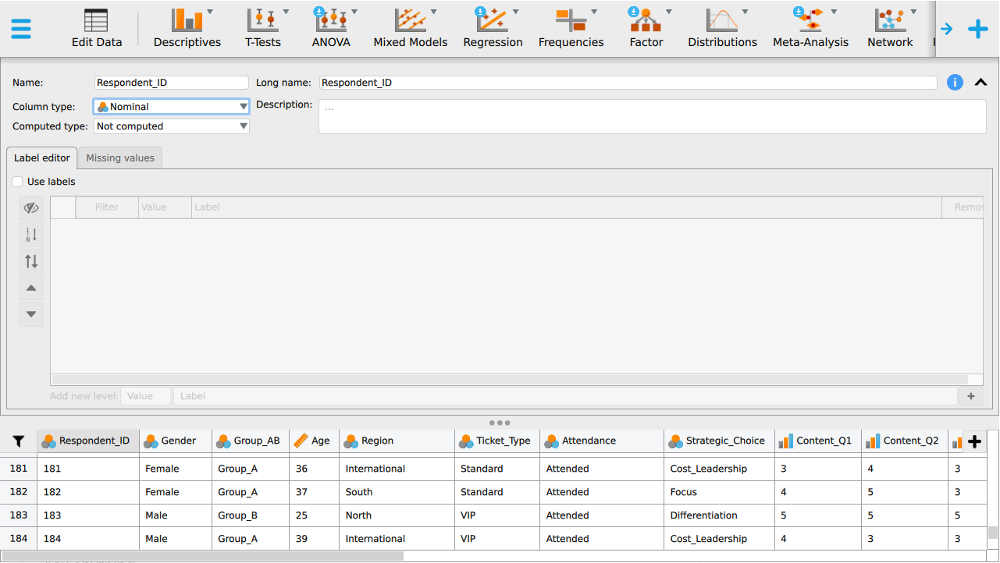
4 minutes
Working in pairs, complete one row for each variable. The first row is done for you:
| Variable | Scale | Discrete or continuous | Summaries that suit it | A wrong summary |
|---|---|---|---|---|
Gender |
Nominal | – | Count, mode | Mean |
Region |
– | |||
Ticket_Type |
– | |||
Age |
||||
Satisfaction |
||||
Waiting_Time_Mins |
Satisfaction is a 1 to 5 rating. Can we treat it as a measurement and take its mean? What are we assuming?Age is recorded in whole years. Is it discrete or continuous? Does the answer change what we do with it?Region30 minutes
Ticket_TypeWaiting_Time_Mins, in ten-minute bands, with a cumulative columnAge, Satisfaction and Waiting_Time_MinsRegion, and a histogram with a boxplot of Waiting_Time_Mins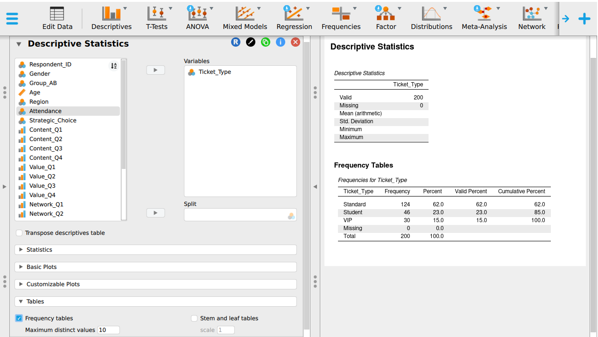
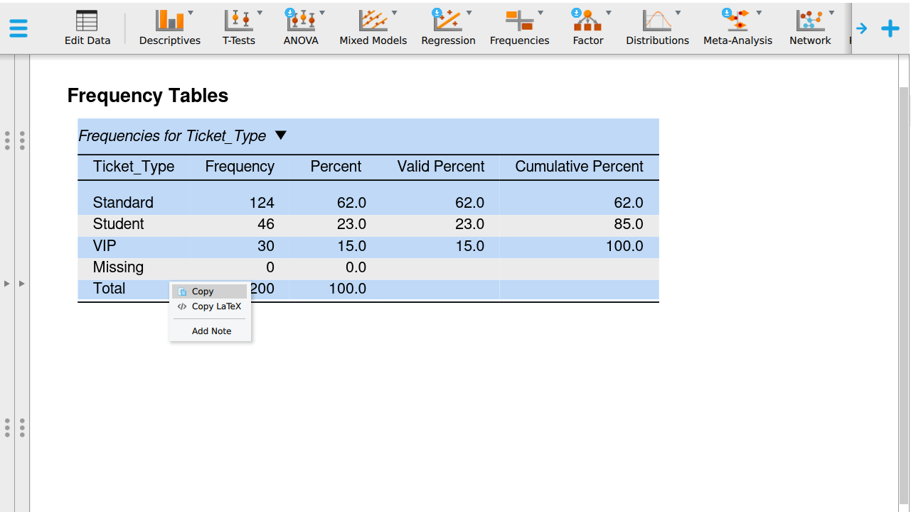
Ticket_Type into Variables, tick Frequency tablesAdd a computed column Wait_Band with this formula:
cut(Waiting_Time_Mins,
breaks = seq(0, 100, 10),
right = FALSE)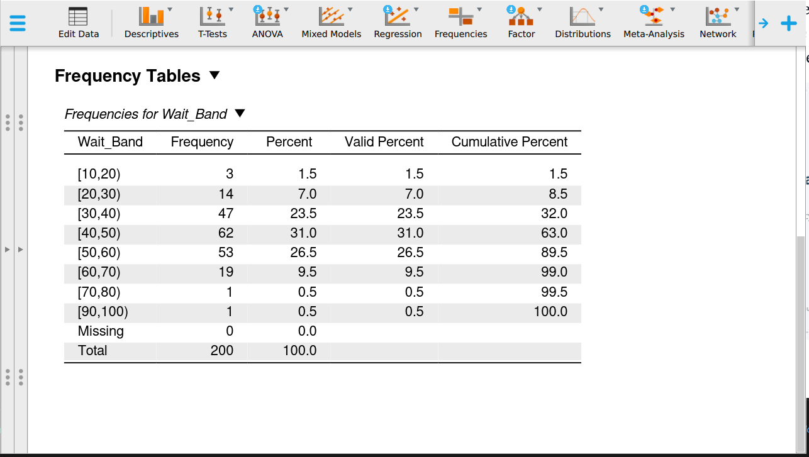
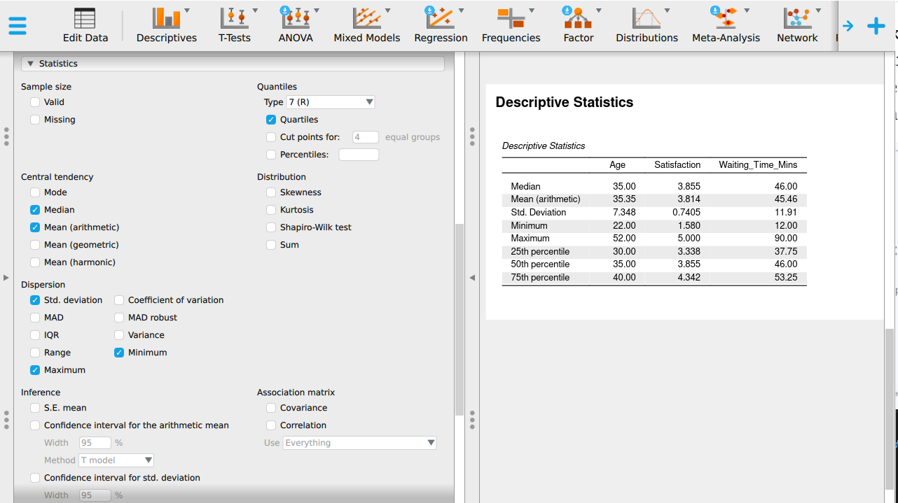
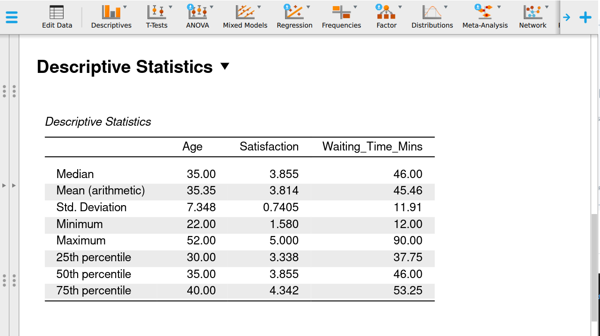
Age, Satisfaction and Waiting_Time_Mins in, after clearing Ticket_Type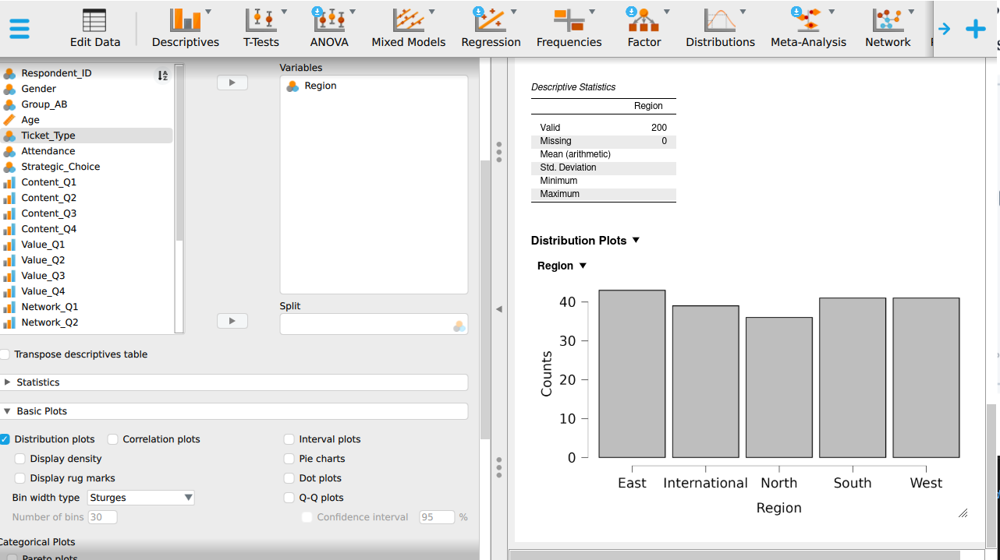
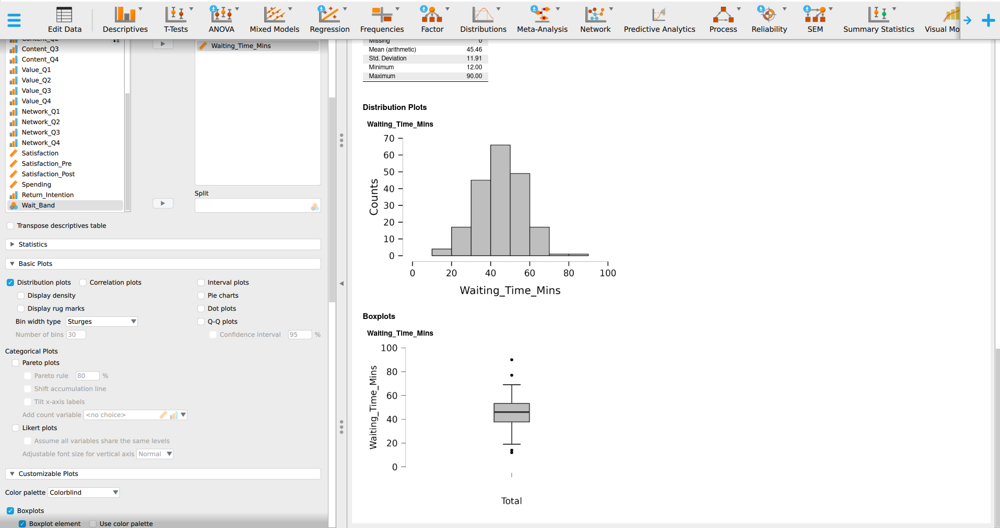
Region, with the vertical axis starting at zeroWaiting_Time_Mins, read togetherWhat share of customers waited under 40 minutes? Which column gave you the answer fastest?
Your answer: ____ per cent of customers waited under 40 minutes. I read it from the ____ column, in the row ____.
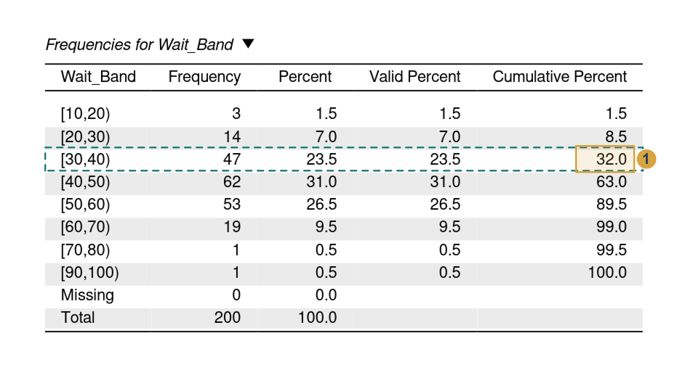
Compare the mean and median of Waiting_Time_Mins. What does the comparison say about the shape? Did the histogram agree?
Your answer: the median is ____ minutes and the mean is ____ minutes. They are ____ (close / far apart), so the shape is ____ (symmetric / skewed). The histogram shows ____, so it ____ (agrees / disagrees).
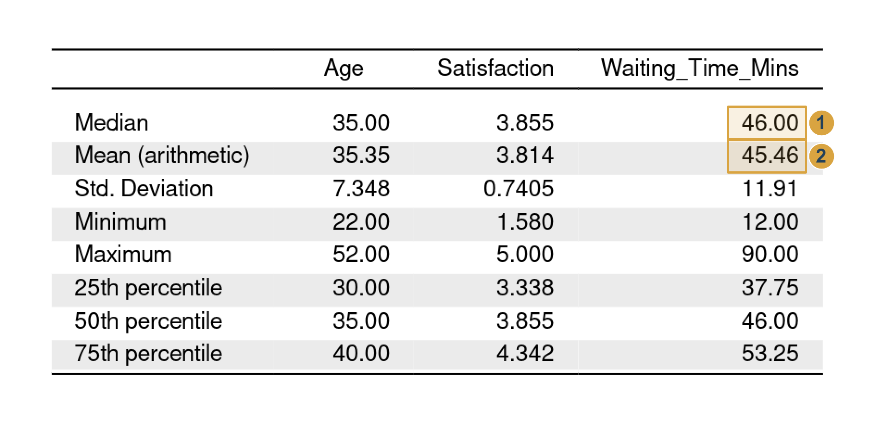
Is the mean of Satisfaction a fair summary here? What would you report, and why?
Your answer: satisfaction has a median of ____ and a mean of ____, on a scale from ____ to ____. It is ____ (a rating / a measurement), so I would report ____, because ____.
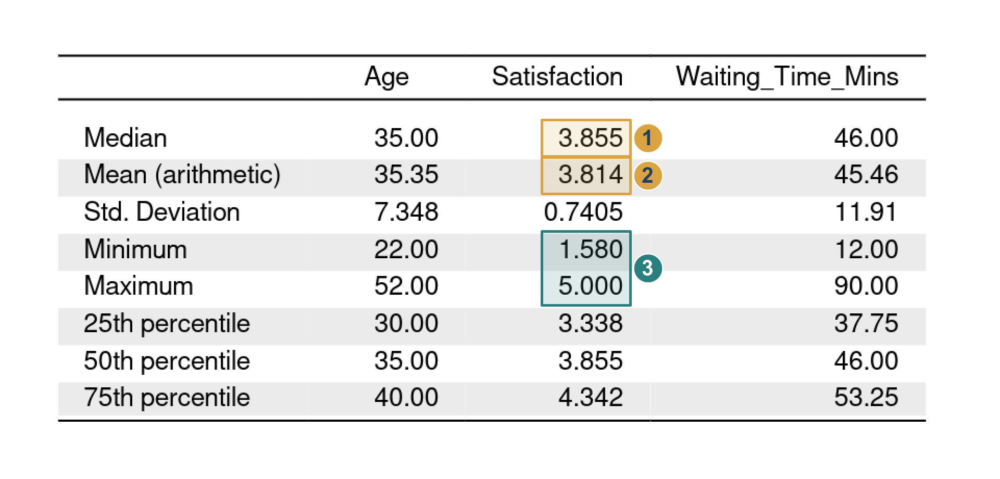
27 minutes
Wait_Band set to OrdinalWrite one paragraph, no more than 120 words, answering the decision question: does the service meet expectations?
20 minutes
110 words
Waiting time was recorded for 200 customers at one branch over one month. Half waited 46 minutes or less and the middle half fell between 38 and 53 minutes, so the service is consistent for most people. Nineteen customers, just under one in ten, waited more than an hour, and two waited over 75 minutes. Return intention is a single ordinal rating, so the median of 4 is the accurate summary, and the average of 3.66 describes no customer. These figures describe this branch in this month and say nothing about other branches. The long waits are worth investigating first, because that is where a 60-minute service standard is breached.
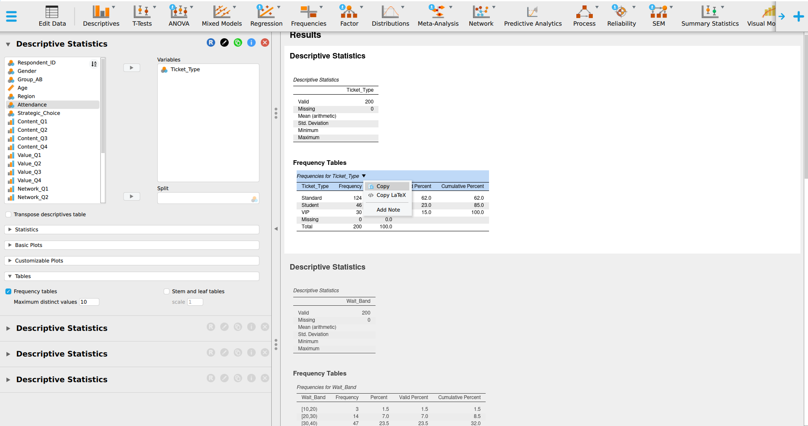